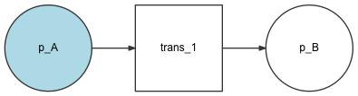
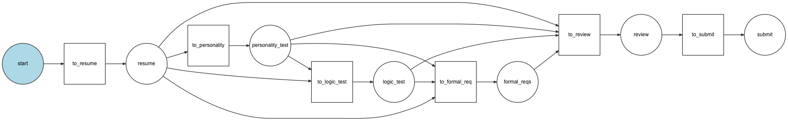
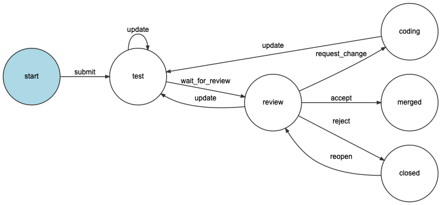

Workflows and State Machines¶
Workflows¶
A workflow is a model of a process in your application. It may be the process of how a blog post goes from draft to review and publish. Another example is when a user submits a series of different forms to complete a task. Such processes are best kept away from your models and should be defined in configuration.
A definition of a workflow consists of places and actions to get from one place to another. The actions are called transitions. A workflow also needs to know each object’s position in the workflow. The marking store writes the current place to a property on the object.
Note
The terminology above is commonly used when discussing workflows and Petri nets
Examples¶
The simplest workflow looks like this. It contains two places and one transition.
Workflows could be more complicated when they describe a real business case. The workflow below describes the process to fill in a job application.
When you fill in a job application in this example there are 4 to 7 steps
depending on the job you are applying for. Some jobs require personality
tests, logic tests and/or formal requirements to be answered by the user. Some
jobs don’t. The GuardEvent is used to decide what next steps are allowed for
a specific application.
By defining a workflow like this, there is an overview how the process looks like. The process logic is not mixed with the controllers, models or view. The order of the steps can be changed by changing the configuration only.
State Machines¶
A state machine is a subset of a workflow and its purpose is to hold a state of your model. The most important differences between them are:
- Workflows can be in more than one place at the same time, whereas state machines can’t;
- In order to apply a transition, workflows require that the object is in all the previous places of the transition, whereas state machines only require that the object is at least in one of those places.
Example¶
A pull request starts in an initial “start” state, then a state “test” for e.g. running tests on continuous integration stack. When this is finished, the pull request is in the “review” state, where contributors can require changes, reject or accept the pull request. At any time, you can also “update” the pull request, which will result in another continuous integration run.
Below is the configuration for the pull request state machine.
- YAML
1 2 3 4 5 6 7 8 9 10 11 12 13 14 15 16 17 18 19 20 21 22 23 24 25 26 27 28 29 30 31 32 33 34 35 36 37 38 39 40
# config/packages/workflow.yaml framework: workflows: pull_request: type: 'state_machine' marking_store: type: 'method' property: 'currentPlace' supports: - App\Entity\PullRequest initial_marking: start places: - start - coding - test - review - merged - closed transitions: submit: from: start to: test update: from: [coding, test, review] to: test wait_for_review: from: test to: review request_change: from: review to: coding accept: from: review to: merged reject: from: review to: closed reopen: from: closed to: review
- XML
1 2 3 4 5 6 7 8 9 10 11 12 13 14 15 16 17 18 19 20 21 22 23 24 25 26 27 28 29 30 31 32 33 34 35 36 37 38 39 40 41 42 43 44 45 46 47 48 49 50 51 52 53 54 55 56 57 58 59 60 61 62 63 64 65 66 67 68 69 70 71 72 73 74 75
<!-- config/packages/workflow.xml --> <?xml version="1.0" encoding="UTF-8" ?> <container xmlns="http://symfony.com/schema/dic/services" xmlns:xsi="http://www.w3.org/2001/XMLSchema-instance" xmlns:framework="http://symfony.com/schema/dic/symfony" xsi:schemaLocation="http://symfony.com/schema/dic/services https://symfony.com/schema/dic/services/services-1.0.xsd http://symfony.com/schema/dic/symfony https://symfony.com/schema/dic/symfony/symfony-1.0.xsd" > <framework:config> <framework:workflow name="pull_request" type="state_machine"> <framework:marking-store> <framework:type>method</framework:type> <framework:property>currentPlace</framework:property> </framework:marking-store> <framework:support>App\Entity\PullRequest</framework:support> <framework:initial_marking>start</framework:initial_marking> <framework:place>start</framework:place> <framework:place>coding</framework:place> <framework:place>test</framework:place> <framework:place>review</framework:place> <framework:place>merged</framework:place> <framework:place>closed</framework:place> <framework:transition name="submit"> <framework:from>start</framework:from> <framework:to>test</framework:to> </framework:transition> <framework:transition name="update"> <framework:from>coding</framework:from> <framework:from>test</framework:from> <framework:from>review</framework:from> <framework:to>test</framework:to> </framework:transition> <framework:transition name="wait_for_review"> <framework:from>test</framework:from> <framework:to>review</framework:to> </framework:transition> <framework:transition name="request_change"> <framework:from>review</framework:from> <framework:to>coding</framework:to> </framework:transition> <framework:transition name="accept"> <framework:from>review</framework:from> <framework:to>merged</framework:to> </framework:transition> <framework:transition name="reject"> <framework:from>review</framework:from> <framework:to>closed</framework:to> </framework:transition> <framework:transition name="reopen"> <framework:from>closed</framework:from> <framework:to>review</framework:to> </framework:transition> </framework:workflow> </framework:config> </container>
- PHP
1 2 3 4 5 6 7 8 9 10 11 12 13 14 15 16 17 18 19 20 21 22 23 24 25 26 27 28 29 30 31 32 33 34 35 36 37 38 39 40 41 42 43 44 45 46 47 48 49 50 51 52 53
// config/packages/workflow.php $container->loadFromExtension('framework', [ // ... 'workflows' => [ 'pull_request' => [ 'type' => 'state_machine', 'marking_store' => [ 'type' => 'method', 'property' => 'currentPlace', ], 'supports' => ['App\Entity\PullRequest'], 'initial_marking' => 'start', 'places' => [ 'start', 'coding', 'test', 'review', 'merged', 'closed', ], 'transitions' => [ 'submit'=> [ 'from' => 'start', 'to' => 'test', ], 'update'=> [ 'from' => ['coding', 'test', 'review'], 'to' => 'test', ], 'wait_for_review'=> [ 'from' => 'test', 'to' => 'review', ], 'request_change'=> [ 'from' => 'review', 'to' => 'coding', ], 'accept'=> [ 'from' => 'review', 'to' => 'merged', ], 'reject'=> [ 'from' => 'review', 'to' => 'closed', ], 'reopen'=> [ 'from' => 'start', 'to' => 'review', ], ], ], ], ]);
In a Symfony application using the default services.yaml configuration, you can get this state machine by injecting the Workflow registry service:
// ...
use App\Entity\PullRequest;
use Symfony\Component\Workflow\Registry;
class SomeService
{
private $workflows;
public function __construct(Registry $workflows)
{
$this->workflows = $workflows;
}
public function someMethod(PullRequest $pullRequest)
{
$stateMachine = $this->workflows->get($pullRequest, 'pull_request');
$stateMachine->apply($pullRequest, 'wait_for_review');
// ...
}
// ...
}
Symfony automatically creates a service for each workflow (Workflow)
or state machine (StateMachine) you
have defined in your configuration. This means that you can use workflow.pull_request
or state_machine.pull_request respectively in your service definitions
to access the proper service:
// ...
use App\Entity\PullRequest;
use Symfony\Component\Workflow\StateMachine;
class SomeService
{
private $stateMachine;
public function __construct(StateMachine $stateMachine)
{
$this->stateMachine = $stateMachine;
}
public function someMethod(PullRequest $pullRequest)
{
$this->stateMachine->apply($pullRequest, 'wait_for_review', [
'log_comment' => 'My logging comment for the wait for review transition.',
]);
// ...
}
// ...
}
Automatic and Manual Validation¶
During cache warmup, Symfony validates the workflows and state machines that are
defined in configuration files. If your workflows or state machines are defined
programmatically instead of in a configuration file, you can validate them with
the WorkflowValidator and
StateMachineValidator:
// ...
use Symfony\Component\Workflow\Definition;
use Symfony\Component\Workflow\StateMachine;
use Symfony\Component\Workflow\Validator\StateMachineValidator;
$states = ['created', 'activated', 'deleted'];
$stateTransitions = [
new Transition('activate', 'created', 'activated'),
// This duplicate event "from" the "created" state is invalid
new Transition('activate', 'created', 'deleted'),
new Transition('delete', 'activated', 'deleted'),
];
// No validation is done upon initialization
$definition = new Definition($states, $stateTransitions);
$validator = new StateMachineValidator();
// Throws InvalidDefinitionException in case of an invalid definition
$validator->validate($definition, 'My First StateMachine');